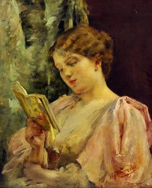
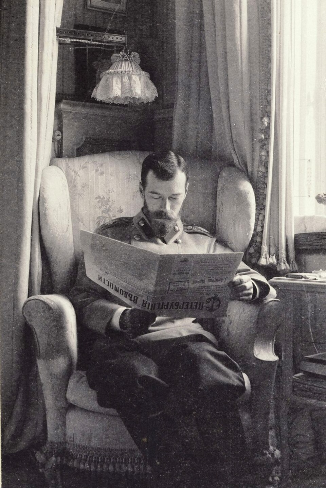

Reading (a book)

In Leo Tolstoy’s Anna Karenina, the motif of reading is a tool in order to characterize those of authentic versus superficial morality. Tolstoy reserves the action of reading for certain characters in certain contexts. This selective use is not accidental. The characters in this novel who are portrayed to engage with reading in a substantial, significant way are intended by Tolstoy to possess a deep morality. Those who do not read at all or read for superficial purposes are portrayed with a level of shallowness.
As Levin is often Tolstoy’s personal moral compass throughout the novel, he is the clearest case of the action of reading being aligned with a sense of authentic morality. He is depicted to fully immerse himself in agricultural books, philosophical works, and supplementary reading for estate management. It is also significant that Levin does not read for performative intellectuality or to participate in elite circles. He consistently reads only to solve problems—whether practical ones on his estate or his philosophical religious questioning. Levin also actively “tests” what he reads with lived experiences; his thoughts evolve into real action. For instance, when he reads contemporary, Western European ideas about agricultural theory, he adjusts his approach regarding traditional Russian farming practices. Additionally, Levin’s deeper understanding and action upon the works he reads is evident when he gets into an intellectual debate with characters like Sergey Ivanovich. While Sergey maintains a sense of very abstracted, philosophical reasoning in this conversation about social structures, Levin responds with practical knowledge. Ultimately, Levin’s spiritual revelation at the conclusion of the novel highlights how he actualizes what he reads. The philosophical and intellectual readings Kitty remarks Levin has absorbed, combined with the peasant Fyodor’s expression of faith is what leads to his final moral development. In other words, Levin’s depiction of reading is one where he is shown as capable of aligning practical action to intellectual thoughts. In contrast, Tolstoy depicts Anna as incapable of genuine reading. On the train to St. Petersburg, Anna is shown to attempt to read an English novel. However, Tolstoy describes that she could not pay full attention to what she was reading because her mind persistently went back to thoughts of Vronsky. Her inability to focus is shown in how she rereads the same lines over without absorbing any knowledge. Further on in the novel when Anna and Vronsky are in Italy, Anna is depicted to again turn to reading. However, her thoughts spiral so much into jealousy over what she perceives as Vronsky’s lack of love for her that she is again unable to focus on what she is reading. She is incapable of intellectually engaging with books; Tolstoy depicts a sense of internal instability through her inability. She is too trapped within her own mental loops that she cannot engage with external narratives. Through Oblonsky, Tolstoy depicts a character who engages with reading very superficially. While he is frequently depicted reading newspapers and even engaging with other characters in political conversations, it is clear this is all only at a surface level. For example, while he reads a liberal newspaper and discusses liberal reforms and administrative changes in Russia, he is not fully committed to any of these principles. His reading serves the purpose of creating this image of himself as an informed, liberal member of society. He avoids any deeper, possibly uncomfortable commitment to any principles. The most contrasting character with Levin, though, is Vronsky. He is not incapable; he is not reading superficially. He simply does not read. He is not depicted to read at a single point within the novel. This lack of the motif of reading demonstrates how shallow Vronsky’s intellectual capabilities are. Without the habit of reflective, introspective reading, Tolstoy depicts that Vronsky lacks the ability for emotional depth.
Works Cited
- Tolstoy, Leo. Anna Karenina. Translated by Richard Bartlett, Oxford University Press, 2014.